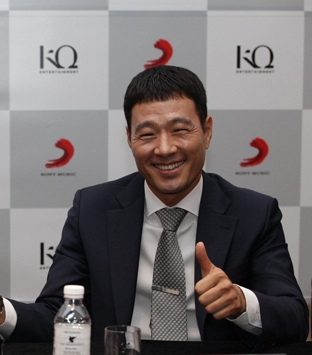

Kim Kyu-uk
Dyrektor generalny i założyciel KQ Entertainment. To on odpowiada za stworzenie i rozwój wytwórni oraz za decyzje dotyczące szkolenia i promocji artystów. Pod jego kierownictwem firma zyskała międzynarodową rozpoznawalność, głównie dzięki sukcesowi zespołu ATEEZ. Kim Kyu-uk znany jest z tego, że stawia duży nacisk na jakość występów scenicznych i rozwój umiejętności swoich artystów.
